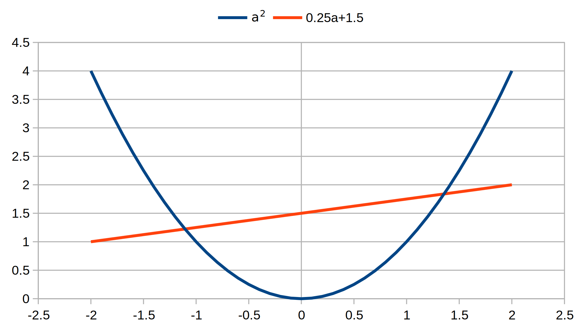
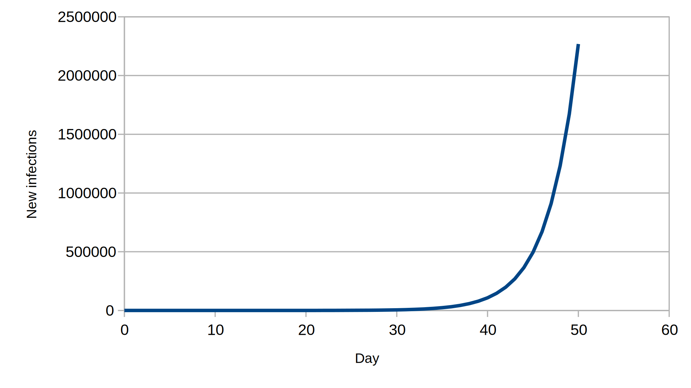
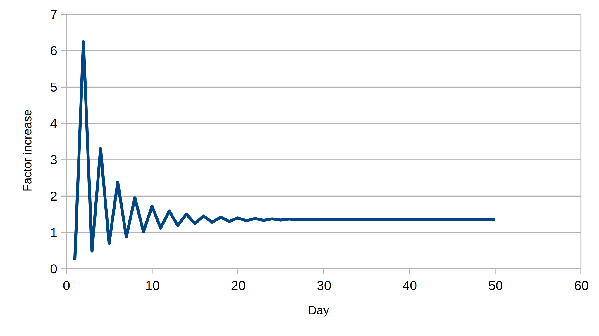
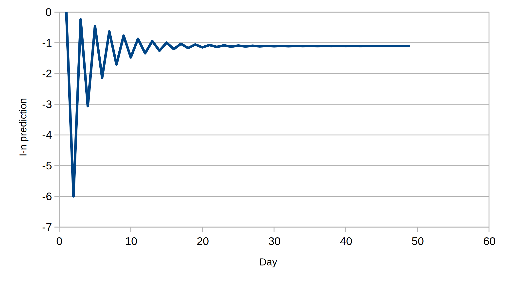

Example 1: Two-day delay
Let's imagine the simplest non-trivial example — a 2-day infection: you, M. Average, pick up a mild cold virus at the supermarket, go around for a couple of days unaware that you are sub-par, then sniffles strike and you stay home and hopefully beat off the virus in short order. On the first day after the supermarketing you infect 0.25 of a person (as M. Average); day two comes, and, with the virus settled in and happily reproducing wildly, you infect 1.5 people. This would give:
\[I_{n} = 0.25I_{n - 1} + 1.5I_{n - 2}\]
The characteristic polynomial is then a quadratic:
\[a^{2} = 0.25a + 1.5\]
This is satisfied by real a values of about 1.36 and –1.11 (more accurate values in spreadsheet):

Download: xlsx
Let's imagine the cold virus initially infected one person on day 0, “patient zero”. Before that the infection was at zero (it didn't exist). On day 1, there is a quarter (0.25) of a person newly infected. On day 2, the newly infected are 0.25×0.25+1.5×1, or approximately 1.56. And so on. I have put this into a spreadsheet, and used the graph features to produce the following images with new infections plotted on linear and logarithmic scales:

We note that the logarithmic image shows initial wobbling, but eventually tends to a straight line. In the spreadsheet there is an additional “Factor” column where I have taken the ratio of new infections for “today” and “yesterday”. I have created a graph of this too:

If you look at the values in the spreadsheet, the factor tends to 1.36 approximately. Assuming that you aren't a proverbial goldfish, you may remember above that one of the solutions of the characteristic equation was 1.36. This not an accident — the solution with the largest absolute value tends to dominate, given sufficient time (after about 20 days, in this case). So once the infection has set in, one can model the behavior as a simple exponential.
What does the other solution represent? We will show that it gives the wobbles in the initial stages of the infection. In fact we try a solution:
\[I_{n} = A\left( 1.36)^{n} + B\left( - 1.11)^{n} \right. \right.\]
On day 0, we have:
\[1 = A\left( 1.36)^{0} + B\left( - 1.11)^{0} = A + B \right. \right.\]
Day 1:
\[0.25 = A\left( 1.36)^{1} + B\left( - 1.11)^{1} = 1.36A - 1.11B \right. \right.\]
This is enough for us to solve for A and B , giving roughly 0.55 and 0.45, respectively. Since these are only accurate to two significant figures the deviation from the true solution is quite rapid:
| Day | New infections (In) | In prediction |
|---|---|---|
| 0 | 1 | 1 |
| 1 | 0.25 | 0.2485 |
| 2 | 1.5625 | 1.571725 |
| 3 | 0.765625 | 0.76806685 |
| 4 | 2.53515625 | 2.5646927725 |
| 5 | 1.7822265625 | 1.800646909885 |
| 6 | 4.248291015625 | 4.32182193683725 |
| 7 | 3.73541259765625 | 3.79871205937171 |
| 8 | 7.30628967285156 | 7.47390041069244 |
| 9 | 7.42969131469727 | 7.60301082750063 |
| 10 | 12.8168573379517 | 13.1833527668565 |
As the process repeats, the rounding errors become more and more severe. If one is minded, one can increase the precision of the arithmetic, and the solution of the sum of two powers multiplied by factors becomes exact in the limit of infinite precision. A better comparison is available in the spreadsheet.
With a more extended infection period, more solutions need to be added to give the initial wobbles. If there are D different roots of the characteristic equation, then you can again “solve” the progression with sums of powers that fits an initial infection pattern spread over D days. If some of the roots are multiple, the solution becomes more complicated, but not intractible. In real life, other factors come into play, such as the gathering of data being sporadic, hampered by political considerations, butt covering, and so on. One is then largely restricted to, hopefully intelligent, guesswork.
Being a bit bonkers, I decided to run the prediction backwards in time (I–n) on the spreadsheet with the related factor column gives the reduction factor going backwards in time (–n). We note that this tends to –1.11, the other solution of the characteristic polynomial. As far as it can (the solution is effectively zero at this point), it “dominates” the negative time behaviour:
